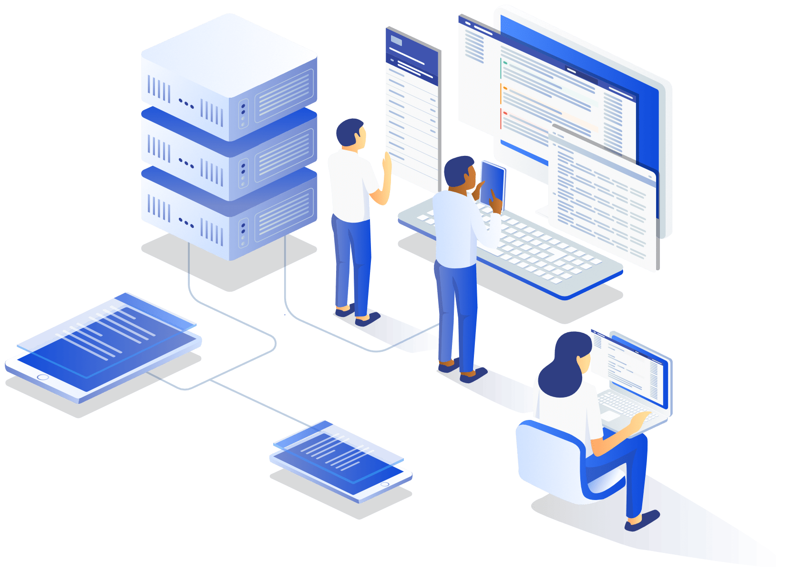

The inception of this professional collective was catalyzed by a shared commitment to Banking and Financial Industry and a mutual interest in the nuances of Continuous Integration and Continuous Deployment (CI/CD). We recognized that the most effective way to address the complexities of DevOps was to establish a structured environment for peer-review and knowledge transfer. What began as a formal DevOps has matured into a disciplined cohort of 40+ professionals dedicated to upholding the highest standards of DevOps process.
Our technical competencies are anchored in a robust command of Java and Groovy. The group’s primary focus involves optimizing CI/CD Pipeline and navigating the evolving landscape of Industry Trend and Compliance Standard. This organization benefits from a multifaceted talent pool: while certain members provide deep-dive expertise in systems engineering, others offer strategic oversight in product management and cybersecurity. This distribution of labor ensures a holistic approach to every Project we undertake.
The cornerstone of our operations is a rigorous, iterative collaborative framework. When faced with critical obstacles within DevOps project, our team utilizes a formal root-cause analysis to identify and implement a resolution. We maintain that the most sustainable solutions are derived from cross-functional brainstorming and data-driven insights. This systematic workflow minimizes technical debt and ensures that our deliverables consistently align with our internal benchmark of enterprise-grade reliability.
The internal culture of our collective is predicated on mutual professional growth and the continuous refinement of our craft. We maintain an environment of Dev, Test, and Prod where feedback is delivered with precision and received with the intent to improve. This culture of excellence was instrumental during our recent successful completion of project, and it remains the primary driver of our retention and high-level engagement. We believe that professional cohesion is the prerequisite for technical innovation.
Looking toward the future, our strategic roadmap is focused on the successful execution of Enteprise DevOps Pipeline, which is slated for completion by Q3 2026. This initiative is projected to significantly enhance our presence in the Banking and Financial market by providing automated real-time deployments. As we scale our operations, our commitment to Founding Principle remains unwavering. We are prepared to navigate the upcoming challenges of the digital landscape as a unified technical unit, dedicated to advancing the field through disciplined engineering.
Partner with us today to Benefit; we invite industry leaders and stakeholders to contact our lead architect to explore trategic partnership opportunities.